Christian streetwear · São Paulo
FEW
FIND IT.
Uma marca para quem escolhe o caminho estreito sem esconder a própria identidade.

First capsule
DROP 01
Primeira cápsula NARROWBORNE.
The narrow way
NÃO É SÓ
O QUE VOCÊ VESTE.
NARROWBORNE nasce da ideia do caminho estreito de Mateus 7:14: uma identidade construída em fé, propósito e escolha. Sem excesso. Sem precisar gritar para ser reconhecida.
MATTHEW 7:14 · FEW FIND IT.
Direção de produto
BUILT TO FEEL
LIKE A BRAND.
O site está preparado para apresentar a linha como streetwear premium sem ficar pesado: tipografia forte, muito espaço, movimento mínimo e carregamento rápido.
OVERSIZED
Modelagem ampla, ombro deslocado e visual urbano.
HEAVY COTTON
Direção para malhas encorpadas e toque premium.
WASHED
Acabamentos estonados e tons sóbrios para os drops.
DETAIL
Etiqueta própria, tag, bordado e estampa como assinatura.

FAITH · DIRECTION · IDENTITY
First drop incoming
ENTRE ANTES
DA MULTIDÃO.
Acompanhe a NARROWBORNE e receba novidades dos próximos drops.